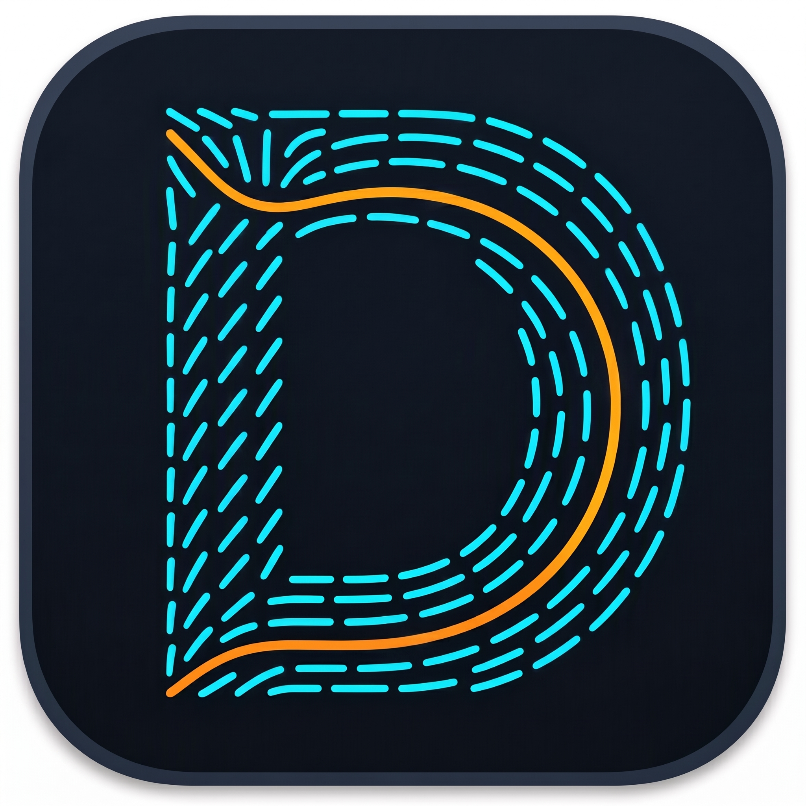
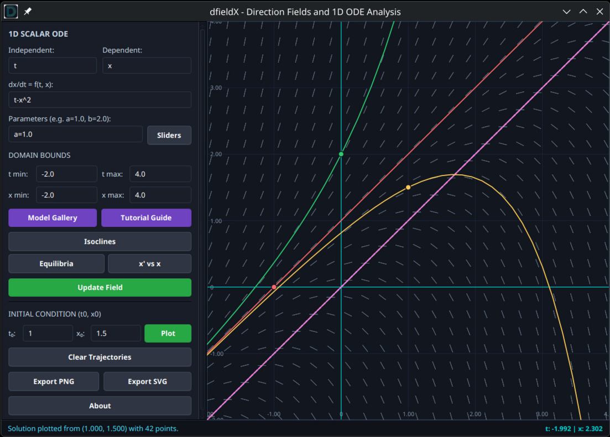
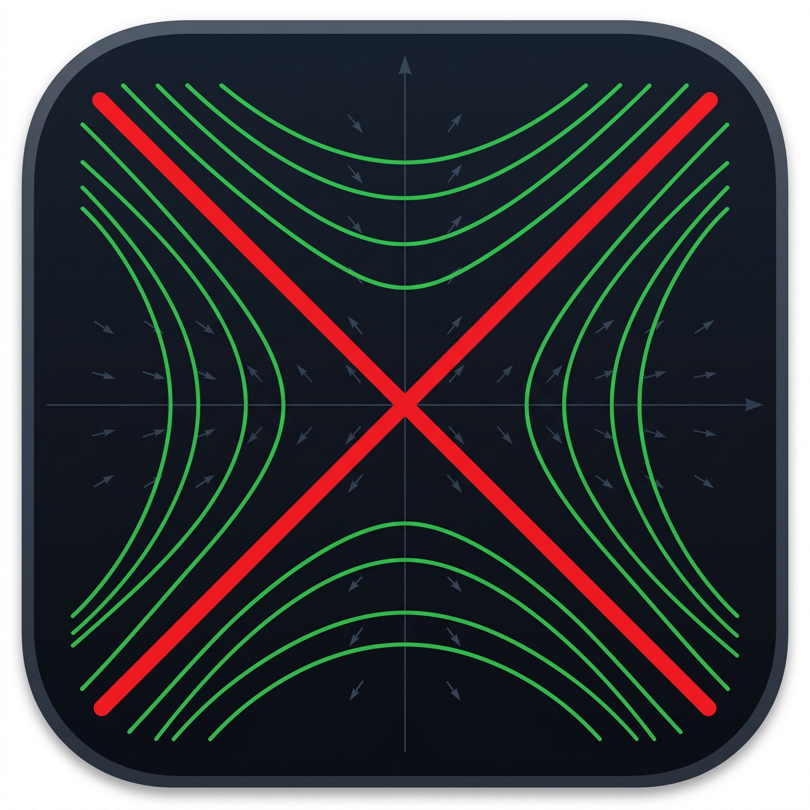
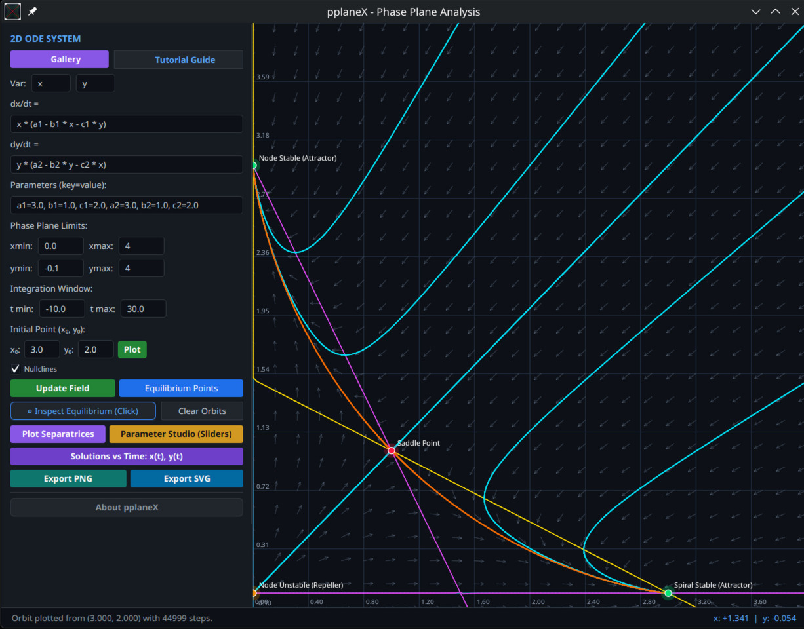
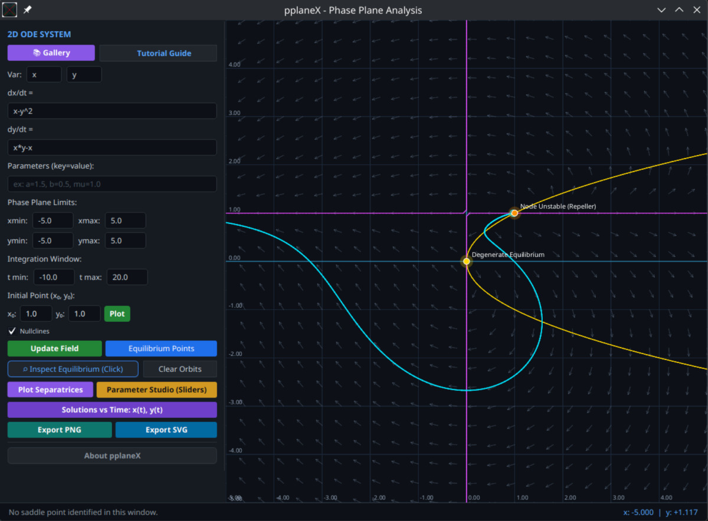
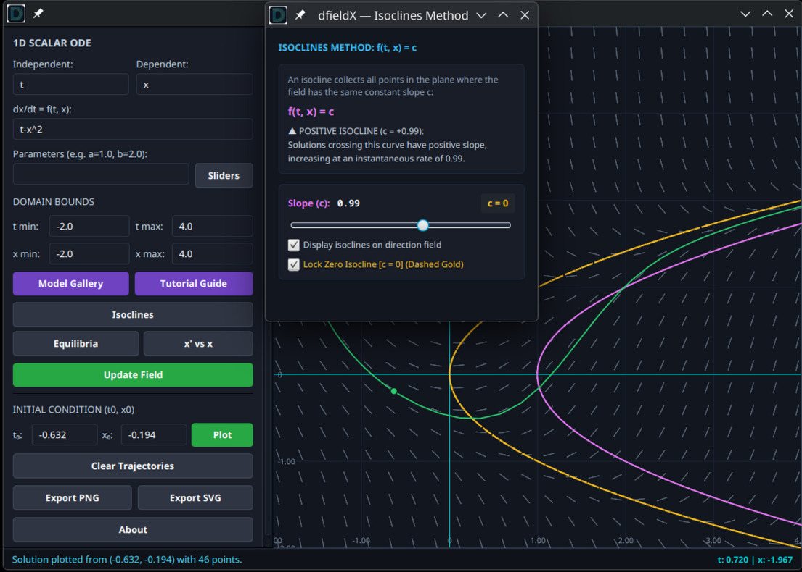
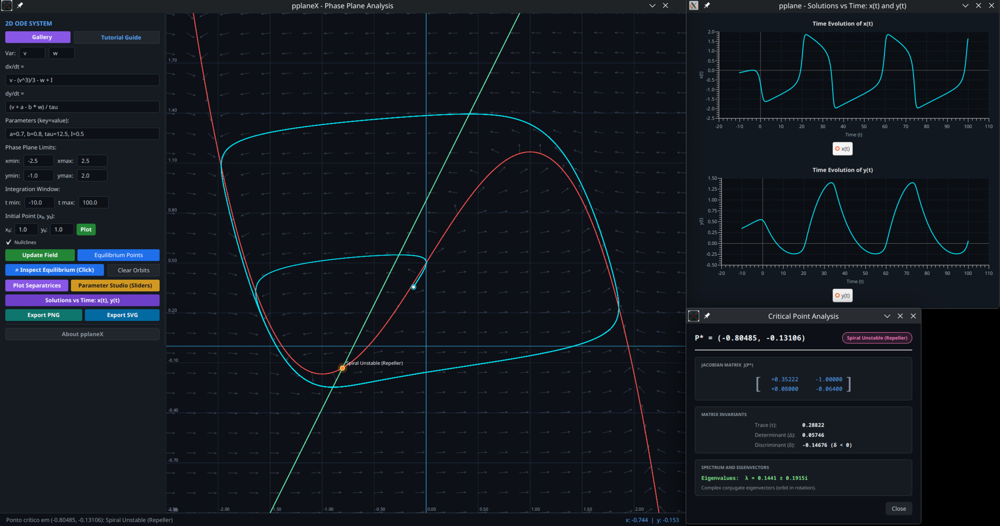
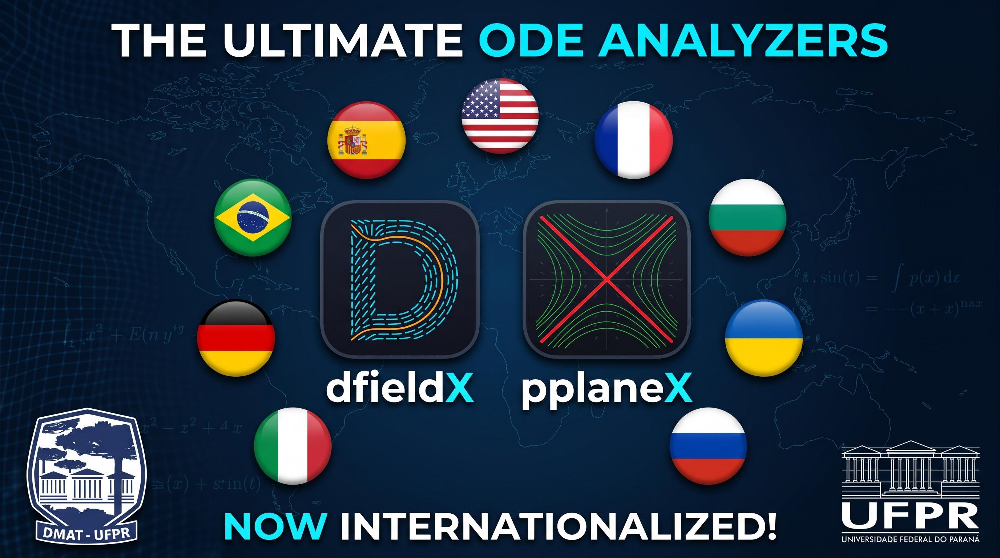

Análise numérica, qualitativa e visual de EDOs e Planos de Fase.


Visualização de campos de direções e análise de EDOs de 1ª ordem. Alta definição vetorial e integração adaptativa.


Plano de fase completo para sistemas planares. Essencial para o estudo qualitativo em biomatemática e sistemas dinâmicos.

Não se limite a modelos engessados. Nossa Custom ODE Engine permite inserir sistemas arbitrários não lineares. O algoritmo identifica automaticamente equilíbrios complexos (como o equilíbrio degenerado na origem) e repulsores, realizando toda a classificação Jacobiana em tempo real.

O método das Isóclinas foi implementado utilizando algoritmos avançados de contorno vetorial. Mapeie a topologia analítica da EDO de forma interativa, facilitando a compreensão de regimes estacionários.

Vá além do plano 2D. Abra painéis auxiliares para observar a evolução temporal exata das populações simultaneamente à órbita de fase. Perfeito para demonstrar ciclos limites.

O ecossistema é totalmente internacionalizado em 9 idiomas. Conta com guias tutoriais detalhados que descrevem a formulação matemática e trazem roteiros de exploração.